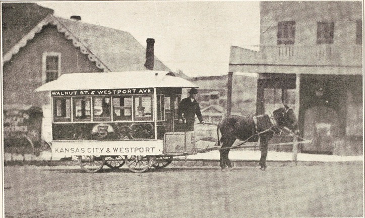
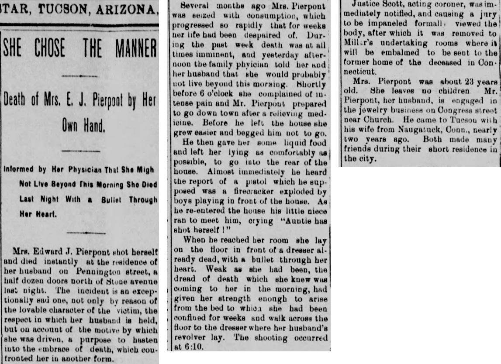

Book 3: Julia
Chapter 10: Life in Kansas City with Sarah Etta
I was so excited to go with Sarah Etta to Kansas City. She had written letters often when she had been away, and when she came home to have her darling little baby, Gracie, she talked and talked about her life there. After Gracie was born, Sarah Etta stayed with us for a while in order to nurse her. But Sarah Etta knew that she couldn’t stay with Gracie forever. She had to return to Kansas City and make sure her businesses were still running well and making a profit. Mother, Sarah Etta, and I went together to Waseca to leave little Gracie with my oldest brother, Samuel, and his wife, Martha. They had a small daughter, Alline, and they were willing to take in Gracie. Sarah Etta had plans for Gracie to some day come to Kansas City and learn who her real mother was.
We said good-bye to everyone — Samuel, Martha, Alline, Gracie, and Mother — and boarded the train for the ride to Kansas City. I was lucky I was going with my sister because she had done all of this already and thus I felt safe and secure when I was with her. Although Sarah Etta was sad to leave Gracie behind with Sam and Martha, she was excited to get back to Kansas City and her businesses. She wanted to teach me a lot of things and I was looking forward to every minute.
My marriage to Bill had not ended, but he was not a well man. He had been living in Kansas City before Sarah Etta and I got there late in 1879. Like Sarah Etta, I took a pseudonym for my work: Daisy Brown. I worked in Sarah Etta’s resorts, both the one on Grand Avenue and the one on Third Street. But, I have to confess that I didn’t enjoy it as much as my sister did and Bill preferred that I find something else to do with my time to earn a living.
So while I was busy working for Sarah Etta, still known as Kitty Brown, I also looked for work as a seamstress (I happen to think I was as good as my sister — perhaps even better). I was also a good stenographer so I began to look for work in that field as well. I liked to keep my life private, so I had fun changing Bill’s name and mine and giving the City Directory people a lot of silly names. I changed Larraman to Lamore and used that as my official name for many years to come. For a few years, however, I was running Sarah Etta’s resort for her on Grand Avenue. Bill and I sometimes got together, but he was busy with his work and I certainly didn’t see him every day. Besides, he didn’t really like what I was doing for a living.
Here are the entries in some of the city directories when I first went to Kansas City. I deliberately made it unclear who I was and what I did for a living, but in nearly all entries there is a certain amount of accuracy.
- 1883 and 1884: Daisy Brown, living at 125 Grand Avenue (Kitty Brown’s resort)
- 1888: Julia Lamore, Alamo Building, stenographer
- 1889: H Jsiorejulia, 1011 Main Street
- 1890: Julia H. LaMore, 1011 Main Street, stenographer
- 1891: Jails La More, Occupation: Far Rtniiu
- 1892: Ji Julia, 918 Woodland
- 1893: J.H. Lamore, 918 Woodland, draughtsman and dressmaker.
From 1880 to 1885, Sarah Etta and I enjoyed the sights and sounds of the city. Sometimes I was left breathless by the noise and the bustle, and there were so many activities to go to. Perhaps the best thing we ever attended was Barnum’s circus. They came to Kansas City in October of 1884 and there was a big parade down Main Street when they arrived. P.T. Barnum named his circus the “Greatest Show on Earth” and I have to admit that it was pretty spectacular. I had never seen an elephant before, and they had two as their star attractions: a white elephant — which they said was sacred because he was white — that had come from Burma, and Jumbo, the biggest elephant anyone had ever seen. I could not believe how large Jumbo was. I was a bit concerned about how he was being treated, though. He had been in the London Zoo for many years and given many children a ride, but P.T. Barnum bought him for $10,000 — a truly princely sum. While he drew large crowds everywhere he went, I couldn’t help but think that he might have preferred a bit more privacy. Unfortunately, Jumbo was killed by a train in St. Thomas, Ontario, Canada, the following year. We couldn’t believe it. He was being loaded onto a train with his handler when they were hit by an unscheduled freight train! Such a tragedy!
Sarah Etta and I watched the parade together with a lot of the other girls from the resorts, and Sarah Etta and I got tickets to actually see the show. It was wonderful; we both loved it. Sarah Etta challenged me to ride Jumbo, so we both went together and rode that huge animal. I was nervous, but Sarah Etta laughed the whole time.
Both Sarah Etta and I wanted to educate ourselves. Our childhood educations had not been perfect — and I think I got a better education in Minnesota than Sarah Etta did when we were still in West Turin. But Sarah Etta had a burning desire to read, to learn as much as she could, and I didn’t disagree with that. So, whenever we had the time, we tried to go to events that would improve our knowledge of the world.
One of those events was on Monday, 17 April 1882. We went to listen to Oscar Wilde, the famous Irish writer, talk about “The Decorative Arts.” We weren’t sure just what that would be about but we knew we might learn something if we went and listened. He was speaking at the Coates Opera House which I think I heard seated about 1800 people, but a lot of things were going on in Kansas City at the time and he drew a small crowd, but we were glad we went. Sarah Etta and I got so many great ideas about how to decorate our homes and the resorts. He talked about the philosophy of aestheticism (I had to learn that word) which focused on interior design. He offered real, practical advice on how to decorate your home. He was opposed to mass-produced furniture and objects. Since our father had been a carpenter, we fully understood what he meant, although I am not sure I agreed with his idea that industrial furniture actually damaged people’s souls. I did agree with his comment, though, that industrial furniture could eliminate beauty from every life. Another interesting twist to his talk: The man was quite the dresser. He wore a velvet, cutaway coat, knee breeches, a Byron collar, and a diamond pin. Considering how much Sarah Etta loved clothes, she was very fascinated by this man’s attire. I think we both liked him because he was a bit of a rebel — and so were we.
Another event we really enjoyed was the Inter-State Fair which began in 1882 and lasted until 1887. This event was always held in the fall at some new fairgrounds near Westport. Special trains left downtown every half hour, but you could also get there by horsecar, carriage, and wagon. We thought at first about just going in Sarah Etta’s carriage with Prince, but Sarah Etta became concerned about leaving Prince in a somewhat strange place. So we opted to take one of the trains.
It was a very large area and featured a half-mile racetrack. This was perhaps the best part — especially for Sarah Etta. There were bookmakers and you could bet — which Sarah Etta did — but I was much more likely to just watch. The grandstand was three decks high and had a cupola to cover us if it rained. Of course, there was lots of food and drink, including beer, whiskey, and soda pop, as well as cigars, of course. There were livestock and produce exhibits, but it was the horse racing, pacing, trotting, and Roman-style chariot racing that Sarah Etta truly loved. I think it was 1883 when a pacer named Daisy D won every single race — and my sister had bet on her every time. We went to that fair at least three times before Sarah Etta had her terrible accident in late 1885. (Eventually, the fair was moved to a different site, but that was after Sarah Etta’s accident when, of course, we weren’t going to many activities at all.)
Living in Kansas City meant there was constant change and incredible improvements such as a new newspaper, the Kansas City Evening Star, electric lights used in about a dozen stores on Main Street in 1882, and the first cable cars in June of 1885. Those cable cars were very handy for the steep 9th Street hill from the Union Depot, for instance, although Sarah Etta still preferred to drive up that hill with Prince pulling her. Sadly, she might not have been injured so badly if she had chosen to take a cable car rather than her own carriage with Prince pulling her. The cable cars and horses often had conflicts.

At first, there were streetcars pulled by mules, but the new cable car system had no animal in front of it and it could move much faster. It disrupted the city’s horse-and-carriage traffic immensely. It was a major undertaking as they had to lay down a large infrastructure which meant digging deep trenches through major thoroughfares to bury the steam-powered pulleys and cables. The horses’ hooves did not like the car’s mechanism which latched on the moving underground rope. As well, cable cars moved rapidly without an animal in front. There was a loud, continuous mechanical humming of the underground cable which terrified horses, causing frequent runaways, horrendous throws, and street collisions. As well, there are some very steep hills in Kansas City, and these cable cars occasionally broke and sometimes would even come flying down the hill on their own. Those cable cars began operating with regularity by June of 1885 and Sarah Etta had her accident in the fall of that year.
I lived in Kansas City from 1880 to 1927, occasionally living elsewhere but always returning to Kansas City. During that time, there were several tornadoes. I was always able to get to safety, but they could be frightening, especially when you huddled inside and could hear the noise of roofs being ripped off their buildings.
After Sarah Etta’s terrible accident, I nursed her, despite how mean and cruel she became as she attempted to deal with the horrendous pain which would never go away. After her death in early 1890, we all fought the will which she had written while completely out of her mind on morphine because of the pain from the accident. We made sure Gracie had a lawyer so that her rights would be protected.
Then after all of that was resolved, I lost Bill, too, who died unexpectedly in 1892. I concentrated on taking care of Sarah Etta’s daughter, Gracie (more discussion about that in the next chapter).
However, Mother and I both managed to find love and marriage in the 1890s. I married James Alan Ham on 5 June 1893, and we eventually adopted a little boy from Scotland whom we named James Alan Ham, Jr. Mother actually managed to marry before me — 10 November 1892, to John Kell. They lived together happily until Mother died on 29 February 1904.
In June 1896, we also lost my little sister, Effie, who had married well and then became very ill with tuberculosis. When she was told by the doctor she would not live more than another day, she decided to end it herself. While her husband was in the back of the house, she found his revolver and shot herself.1 My mother had suffered some terrible losses but the deaths of Bessie and Effie were the most difficult for her to handle. I stayed close by and tried to get her through it.

From the moment Sarah Etta died, I made it my mission to take care of Gracie. To show her the love and affection that I knew Sarah Etta wanted to give her. I had never been a mother before and I didn’t know if I was up to the task, but I was certainly going to try as hard as I could to make Gracie know that she was loved and protected.
Author’s Note: The women in Sisters were real people, and I have told their story as accurately as I can for lives lived in the 19th century. I can prove and support many of the facts with records from the time. But no record can tell me exactly what someone said, and for some events I know only portions of the story. So I have also had to use my imagination, to put you, the reader, inside the head of each woman as she tells her own story.
-
The Arizona Daily Star said Effie was “about 23 years old,” but she was 28. She was born on 26 October 1867. ↩︎